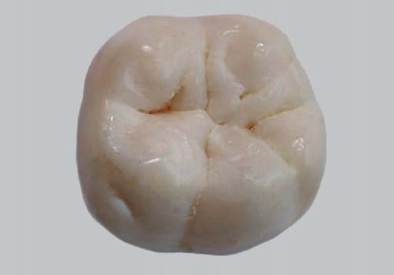
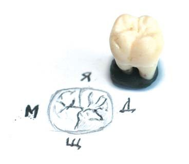
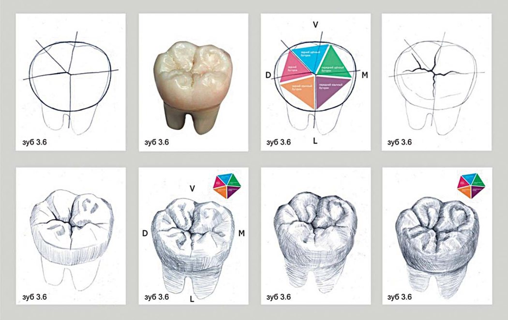
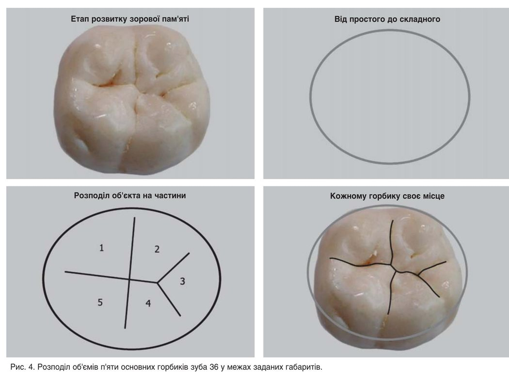
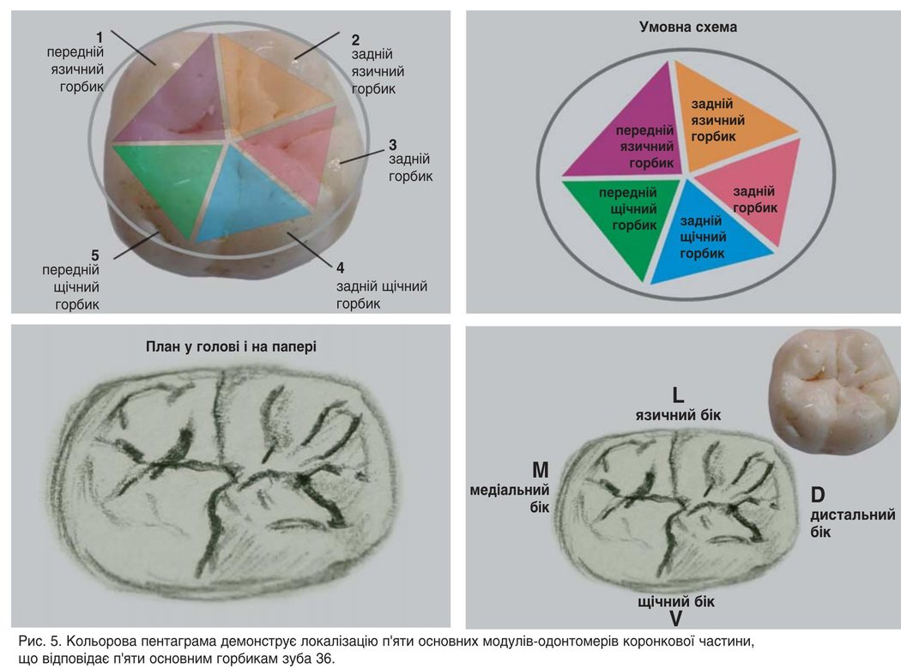
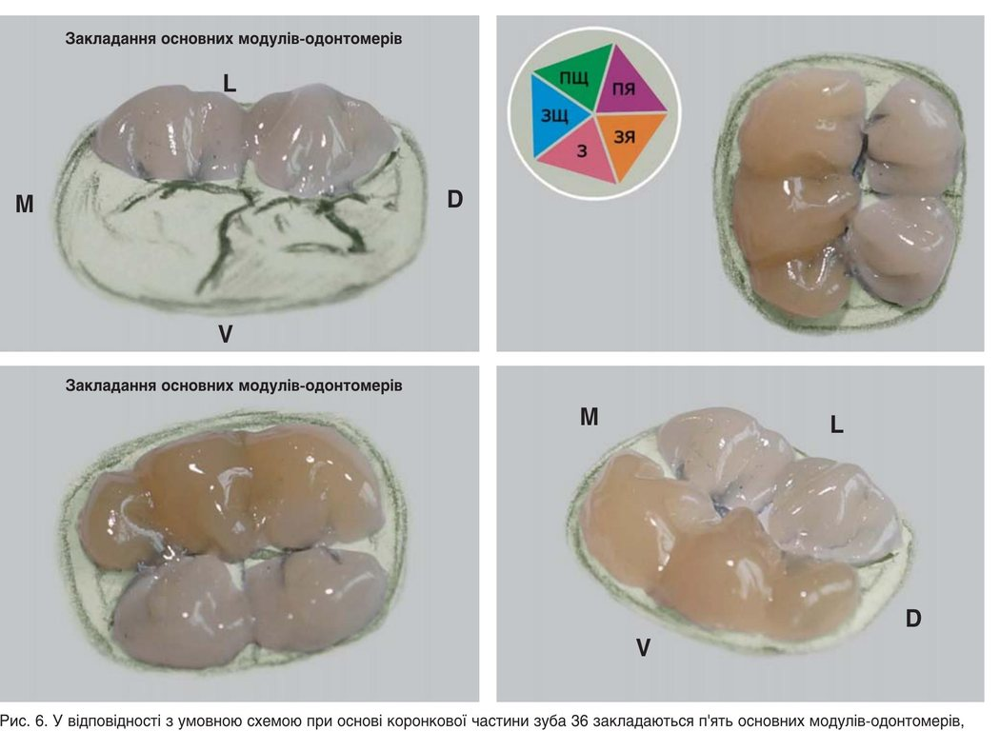
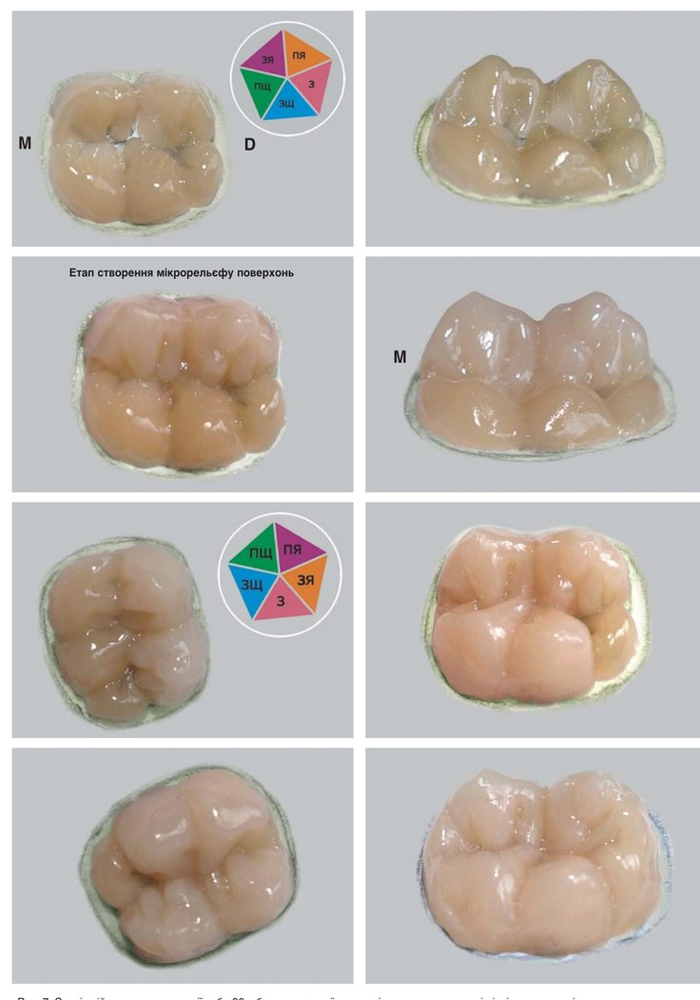
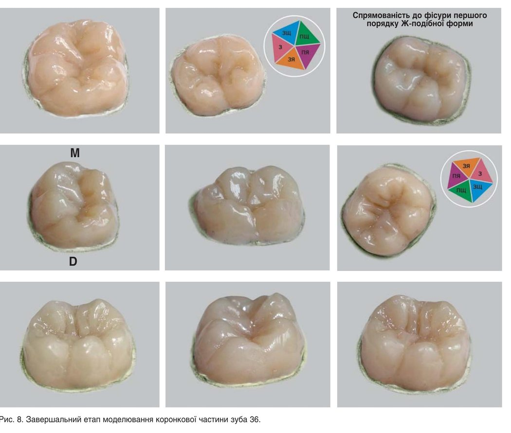

Практичні курси · журнал «ДентАрт» 2018 №1
Моделювання зубів: від простого до складного
MODELING OF TEETH: FROM SIMPLE TO COMPLEX
Лариса Ломіашвілі, Дмитро Погадаєв, Сергій Михайловський,Омський державний медичний університет (м. Омськ, Російська Федерація)
Коли ми спостерігаємо за кінцевим результатом процесу створення будь-якого твору мистецтва, картина це, скульптура чи архітектурний ансамбль, то відчуваємо естетичну насолоду від результатів творчості. Ми схиляємося перед польотом фантазії, індивідуальністю створених форм, артистичними здібностями умільця. Здається, що неможливо досягти такого рівня майстерності, і залишається тільки дивуватися, як вдалося авторові створити настільки унікальний об'єкт, досягти такого високохудожнього результату...
Насправді існують прийоми художньої майстерності, і коли ми вивчаємо їх, перед нами крок за кроком розкриваються етапи авторських діянь, і ми розуміємо, що процес заповнення простору здійснюється строго послідовно. Коли розкриваються секрети майстерності покроково, поетапно, у того, хто спостерігає за процесом творення, мимоволі виникає думка: може, і мені спробувати, а раптом і у мене вийде! Залишається всього-навсього подолати внутрішню несміливість, переступити через власний страх, напругу і почати створювати індивідуальні твори мистецтва – з усмішкою, радістю і бажанням досягти гідного кінцевого результату, за принципом viam supervadet vadens – дорогу здолає той, хто йде.
Відновлення відсутніх тканин – цілий технологічний процес з багатьма етапами, які слід виконувати послідовно, піднімаючись сходинками майстерності «від простого до складного», постійно працюючи і критично аналізуючи результати своєї творчості.
Уміння правильно відновлювати форму відсутніх твердих тканин зубів має першорядне значення у клінічній стоматології. Руки стоматолога – це і є основний інструмент, який творить чудеса на етапах моделювання зубів! І починати треба з розвитку зорової пам'яті, спостережливості, мануальних навичок, творчого мислення та здатності сприйняття форм у просторі. Кожен, хто бажає пізнати етапи відновлення, може взятися до перших вправ, маючи мінімум умов – матеріал та інструменти.
До уваги читачів – покрокові ілюстрації створення коронкової частини нижнього першого лівого моляра, зуба 36, з композитного матеріалу Естелюкс НК компанії «Стомадент».
Важливими етапами творчого становлення лікаря-стоматолога є тренування, розвиток спостережливості і зорової пам'яті. Початківці-реставратори мусять розвивати в собі почуття форми, спостерігаючи предмет з різних точок, зорову пам'ять, щоб відтворити відсутні тканини в їх справжньому вигляді і призначенні, з усіма властивими характеристиками: об'ємом, контуром, фактурою, кольором (рис. 1, 2). На зорову пам'ять ми спираємося постійно, виконуючи роботу як безпосередньо в ротовій порожнині, так і на моделі, тому що неможливо одночасно дивитися і на оригінал, і на заповнюваний дефект. При цьому слід враховувати характеристики початкового зображення.
Для тренування зорової пам'яті і спостережливості можна також скористатися відтворенням предметів, що вивчаються, на папері у вигляді малюнків, графічних об'єктів (рис. 3). Незважаючи на площинне зображення (двомірність простору), у виконавців-початківців поступово формується бачення пропорцій, співмірності частин, деталізації предметів по поверхні і т.д.



Етап проведення аналізу загальної конструкції моделі, визначення основних порцій цілого і частин – дуже важлива ланка в ланцюзі конструювання і подальшого моделювання зуба. На цьому етапі вирішується проблема заповнення площини. Передусім слід знайти місце для головної ланки або предмета. Головний об'єкт має залишитися домінантою, а частини гармонійно співвідноситися між собою. При виконанні моделювання стоматолог повинен мати добре розвинуту просторову уяву. Спочатку слід ознайомитися з метою реставрації, її обсягом і призначенням. Потім подумки уявити і, якщо це потрібно, розрахувати просторову форму кожної деталі, що реставрується, її розміри і пропорційні співвідношення окремих елементів.
Труднощі виникають при недотриманні пропорцій. Почуття пропорції дозволяє співставляти розміри всіх частин модельованого предмета одна щодо одної і до цілого. Масштаб задається заздалегідь. При реставрації подумки наносяться осі, визначається співвідношення розмірів між крайніми точками моделі на різних напрямках. Потім відновлюється її габаритний обрис, після чого намічаються розміри кожної окремої частини (рис. 4).
Роботу проведено на звичайному блокноті «Полі-панелі» ТОВ «Дентіка». Ми спеціально обрали вільний простір, як то кажуть, з «чистого аркуша», з гладкою відполірованою поверхнею, без будь-яких обмежень, з виразним баченням «робочого операційного поля». Кожен з нас може олівцем чи фломастером означити габаритні обриси об'єкта, визначитися зі сторонами (M – медіальний бік, D – дистальний бік, L – язичний бік, V – щічний бік). Далі аналізуємо, з яких морфологічних елементів складається коронкова частина зуба 36: це три щічних горбики (передній щічний, задній щічний, задній) і два язичних горбики (передній язичний, задній язичний). Ознака боку – язичні горбики вищі, ніж щічні, розділяє горбики фісура першого порядку Ж-подібної форми. Схематично олівцем розкреслюємо макроанатомію зуба, кожному горбикові своє місце. Пропонуємо ще і всередині кожного горбика прокреслювати напрямні знакові лінії – орієнтири основних морфологічних елементів (тонша деталізація), які допомагають у подальшому моделювати конструкцію з композитного матеріалу (рис. 5).


Спочатку всередині окресленого і заданого контуру, що образно відповідає «основі коронкової частини зуба», на гладкій поверхні блокнота закладаємо модулі-ікла-одонтомери, кожен з яких займає своє місце, заповнює свій простір (рис. 6).
Закладається базовий шар за типом «маса дентин» при «основі коронкової частини зуба», і вже на цьому етапі ми прагнемо до правильних остаточних анатомічних форм нижніх молярів. Від того, як грамотно буде закладено цей етап, залежить майбутнє створюваної конструкції. Після того, як основний простір зайнято, на наступному етапі моделювання нижніх молярів модулі-одонтомери, збільшуючись в об'ємі, немовби об'єднуються між собою, відбувається їх злиття (рис. 7). Поступово моделюються обриси вестибулярної, язичної, контактних поверхонь. Модулі-ікла-одонтомери, збільшуючись у розмірі, об'єднуються між собою в одну композицію – нижній моляр 36.

До завершального етапу належить з'ясування характеру поверхні моделі, визначення мікрорельєфу, підкреслення і відтворення індивідуальних особливостей форм об'єкта. Завдяки моделюванню мікрорельєфу поступово відтворюється зовнішня форма і об'єм відновлюваного об'єкта. При цьому також необхідно правильно взаєморозмістити морфологічні елементи коронкової частини зуба, враховуючи індивідуальні особливості створюваних структур.
Формується зовнішній шар на рівні «маси емаль», завдання оператора – практично повторити основні позиції «маси дентин» і посилити борозни другого і третього порядків, в результаті чого буде моделюватися оклюзійна поверхня нижніх молярів.

Цінність роботи вимірюється точністю спостереження, умінням побачити суть зображуваного. Тонкі елементи так само значущі і здатні заповнити простір та утримати форму (рис. 8). Слід навчитися охоплювати відразу кілька предметів і розташовувати їх у певному положенні один щодо одного.
Побудова композиції нижнього моляра, що нагадує коронкову частину зуба 36, завершена.

Висновки
Вашій увазі запропоновано один з алгоритмів моделювання нижніх молярів композитними матеріалами. У його основу закладено принципи використання модульних технологій в естетичній стоматології, де як модуль розглядається фрактальна одиниця – ікло-одонтомер. Ваше право пропонувати свої варіанти моделювання. Головне – це остаточний результат: правильність створених анатомічних форм. Яким чином ви цього досягаєте – це ваш вибір. Свобода породжує творчість!
Література
- Ломиашвили Л.М. Искусство моделирования и реставрации зубов / Л.М.Ломиашвили, Д.В. Погадаев, С.Г. Михайловский // Омск: Полиграф, 2014. – 436 с.: ил.
- Ломиашвили Л.М. Клинико-диагностическое значение микрорельефа зубов / Л.М. Ломиашвили, Д.В. Погадаев, С.Г. Михайловский // Кафедра. – 2015. – №51. – С. 58-61.
- Лопанова Е.В. Подготовка преподавателей медицинского вуза к формированию коммуникативной компетентности врача-стоматолога / Е.В. Лопанова, Л.М. Ломиашвили // Стоматология. – 2015. – №5. – С. 76-79.